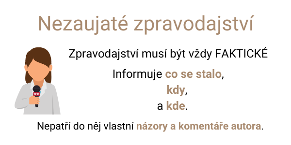
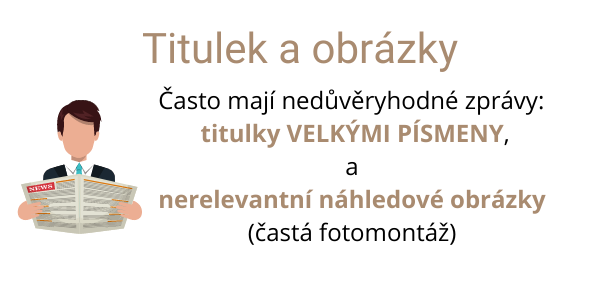
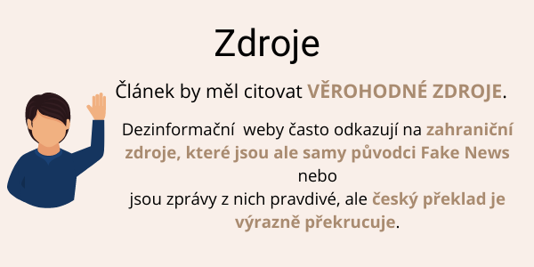
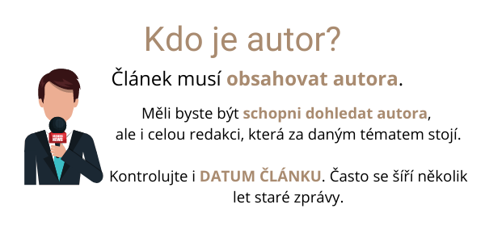
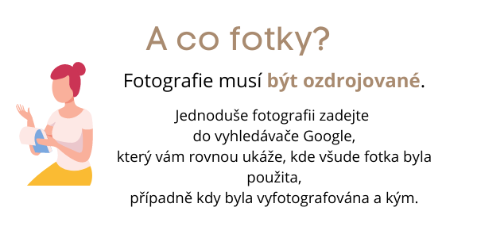

Spojení Fake News se dá česky přeložit jako podvržené zprávy. Jedná se o úmyslně šířící se dezinformace či hoaxy, které vedou k tomu, že chtějí ovlivnit a zmanipulovat příjemce. Fake News se může objevit ve formě článku či zprávě v médiích. Často se Fake News věnují celé weby, které se snaží vypadat důvěryhodně, tzv. dezinformační web. Šíří se především sdílením přes sociální sítě či e-mailem, ale také je mohou šířit samotná média, pokud jim také podlehnou. Fake News často může mít satirický a parodický podkres, který se snaží publikum pobavit. Satira vás většinou pobaví ve chvíli, kdy víte, že se jedná o smyšlenou informaci. U Fake News se ale nikde nedozvíte, že se jedná o vymyšlenou zprávu. Naopak, dezinformační zdroje, šířící fake-news, dávají velký důraz na to, že publikují pravdivé informace, které ostatní média nechtějí zveřejnit.
Fake News můžete snadno uvěřit, protože se částečně zakládá na věrohodných informacích. Často Fake News působí trochu bulvárně a vzbuzuje emoce. První, kdo podvrženou zprávu zveřejní je typicky dezinformační web. Následně se zpráva šíří přes facebook, další sociální sítě či e-maily. Na sociální síti pak dezinformační web šíří Fake News nejen za pomoci své vlastní stránky, ale také přes několik spřízněných stránek s názvy jako např.: milujeme svět, sdílíme pravdu, ty nejlepší typy, které se starají o šíření Fake News.
Červená karta pro prezidenta
Jistě si pamatujete na demonstraci na Národní třídě dne 17. listopadu 2014, kdy protestující vystavovali prezidentovi Milošovi Zemanovi červenou kartu. Internetem se šířila zpráva o tom, že demonstraci organizovalo velvyslanectví USA v ČR.
Tvrzení bylo vystavěno na základě fotografie účastnice demonstrace rozdávající červené karty kamarádkám. Dezinformační web si z profilu na facebooku účastnice zjistili, že pracovala jako lektorka angličtiny pro velvyslanectví USA v Praze. Na této informaci dezinformační web vystavěl Fake News o organizaci demonstrace americkou ambasádou.
Hoax obecně označuje snahu, abyste uvěřili nepravdivé zprávě. Na internetu se tyto zprávy šíří články, příspěvcích na sociálních sítích či e-mailech. Pro hoax jsou typické následující body:
Kategorie hoaxů se obecně rozdělují podle toho, na co jsou zaměřené. Hoaxy rozdělujeme do několika kategorií: hoax o celebritách, soutěžní hoax, historický hoax, žertovní hoax,virusový hoax. To je jenom malý výčet toho, kde se s hoaxem můžeme setkat. Hoax se často používá i k manipulaci politického režimu či volebních preferencí.
S pojmy Fakenews i hoax se můžeme často setkat i ve veřejném prostoru. Slouží často k očernění názorů oponenta. Dá se s nadsázkou říct, že slovo Fake News je synonymem pro výroky Donalda Trumpa. Nejedná se však o nic neobvyklého i v Čechách. Například mluvčí prezidenta Zemana, Jiří Ovčáček používá tyto slova velmi často a označuje jimi vše, co se jemu či prezidentu Zemanovi nehodí.
Problém hoaxů je v tom, že běžní uživatelé často věří těmto zprávám a následně je sdílejí či přeposílají v dobré víře. Tím pádem dochází k samovolné distribuci této zprávy, aniž by se autoři více snažili. Díky tomuto mechanismu jsou hoaxy problematické zejména z následujících důvodů. Hoaxy předávají nebezpečné rady - například lékařské doporučení, které ale nepsal žádný lékař a je spíše zdraví nebezpečné. Také se hoaxy snaží o zpochybňování veřejnoprávních médií či institucí. Problém nastává i ve chvíli, kdy pomocí hoaxu dojde k prozrazení důvěrných informací. Například právě při přeposílání e-mailů, kdy nejsou skryti všichni.
Ukázka Hoaxu ze stránky hoax.cz: poplašná zpráva
Ukázka Hoaxu ze stránky hoax.cz: vyjádření odborníka
Nakupování na internetu se stalo naprosto samozřejmou součástí života téměř každého znás. Bohužel srostoucí poptávkou roste také množství klamavých či nespolehlivých e-shopů. V dnešní době je možné si založit e-shop během jediného dne, a proto se může stát, že e-shop, který Vám nabízí produkt jej buď nikdy nedoručí nebo Vám jej doručí ve kvalitě, kterou ste si rozhodně neobjednali. Jak si tedy vybírat spolehlivé obchody?
Víte, že zboží zakoupené na internetu můžete vždy do 14 dnů vrátit? Bez jakéhokoliv uvedení důvodu či sankce. Platí ale povinnost vrátit zboží v originálním obalu.
Pozor, pokud budete nakupovat zboží živnostník či firma, toto právo se na Vás nebude vztahovat.
Pokud zboží reklamujete kvůli závadě máte nárok na výměnu, odstranění vady, slevu z kupní ceny či odstoupení od smlouvy. Reklamace musí být vždy vyřízena do 30 dnů.
Náklady na vrácení zboží platí prodejce a Vy nemusíte zboží vracet v originálním obalu.
Nákup na zahraniční stránce může být mnohdy výhodnější. Pozor ale jaké zboží a z jaké země hodláte koupit. V rámci Evropské unie platí obdobná pravidla jako v České republice. Neměl by tedy být problém zboží vrátit či reklamovat. Pokud byste ale nějaký problém řešili, v rámci Evropské unie Vám s ním pomohou Evropská spotřebitelská centra, jejichž pobočku naleznete i v České republice.
Při nákupu mimo Evropskou unii je třeba počítat s tím, že cena ve většině případů neobsahuje DPH, clo či jiné poplatky. Dle ustanovení § 71 zákona č. 235/2004 Sb., o dani z přidané hodnoty je od DPH osvobozeno zboží, jehož úhrnná hodnota nepřesahuje 22 EUR, s výjimkou alkoholických nápojů, parfémů, toaletní vody, tabáku a tabákových výrobků.
Cla jsou zproštěny zásilky zboží nepatrné hodnoty, jejichž cena je nižší než 150 EUR. Opět se to však nevztahuje na skupinu produktů jako jsou alkoholické a tabákové výrobky.
Pokud se rozhodnete nakupovat zboží ze zahraničí, ujistěte se, že se jedná o prověřený obchod. Také si pohlídejte, že platba proběhne bezpečně. Jedním z ověřených platebních systémů je služba PayPal.
Na internetových bazarech je obecně nejsnadnější naletět nějakému podvodníkovi. Proto si před koupí svého prodávajícího prověřte. Na stránkách sbazar.cz, annonce.cz či mimibazar.cz naleznete recenze prodávajících. Dále existují bazary, které přímo ověřují uživatele například pomocí služby mojeID a dalších.
V dnešním online světe na Vás reklama útočí prakticky všude. A jelikož dnešní internetový systém je opravdu chytrý, bude se Vám zobrazovat hlavně reklama na produkty či služby, o kterých uvažujete nebo jste o ně někdy projevili zájem. A jaké druhy internetové reklamy existují?
Při čtení článků, při procházení Facebooku i Instagramu. Tento druh reklamy je zkrátka všude. Jedná se o graficky upravené obrázky či dynamicky se proměňující produkty.
Bannerová reklama ve vyhledávání
Bannerová reklama ve vyhledávání
Hledáte nějaký produkt na Googlu či Seznamu? Po zadání vyhledávacího dotazu se Vám na prvních místech objeví placené výsledky. A poznáte je zcela jednoduše – musí být označené jako reklama.
Reklama ve vyhledávání
Při vyhledávání určitých produktů se Vám v horním poli může zobrazit přímo nabídka produktů nabízená různými e-shopy. Zde se opět jedná o placenou reklamu.
Reklama na Google: Nákup
Reklama zobrazená vy vyhledávačích Google či Seznam nejspíš nepřekvapí. Vždy je pečlivě a jasně označená. Co ovšem může překvapit je, že reklama funguje také na cenových srovnávačích a v nákupních galeriích jako je Heureka.cz, Biano či Favi.
Kromě klasické reklamy na Facebooku, Instagramu či dalších sítích, uživatel často narazí na propagaci nějakého produkty přímo na profilu známé osobnosti, kterou sleduje. Internetoví influenceři (jak se říká uživatelům s širokou základnou fanoušků či sledujících) mohou uzavírat smlouvy s firmami a propagovat jejich produkty na svých stránkách. Taková spolupráce by ale měla být vždy jasně a čitelně označená. Například tak, že nahoře u příspěvku uvidíte text „Placené partnerství s X“ či uvidíte toto označení na začátku popisku.
Reklama na sociálních sítích: Instagram